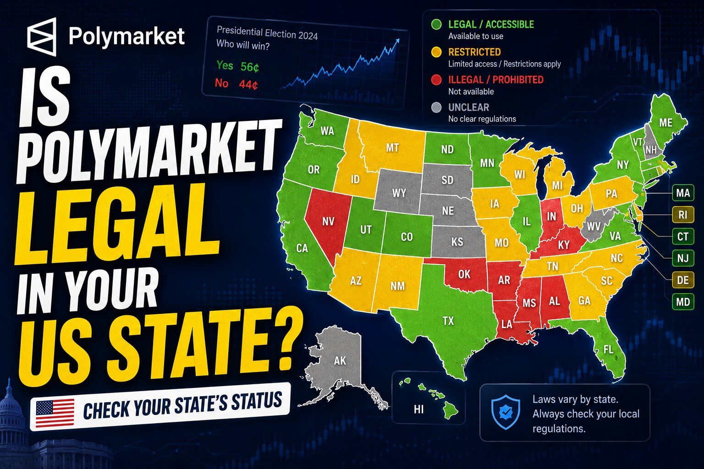

Is Polymarket Legal in Your US State?
Inside the US, Polymarket's legal status isn't decided city by city — no US city or county regulates prediction markets on its own. It comes down to two levels: a federal Designated Contract Market designation from the CFTC that applies nationwide, and a fast-moving, state-by-state fight over whether sports and election event contracts count as unlicensed gambling under state law. Search your city below and it'll resolve to your state's current status; scroll to browse all 50 states plus DC directly.

Quick answer: where things stand right now
Federal baseline: Polymarket's US exchange (operated by QCX LLC) holds a CFTC Designated Contract Market designation, authorizing event contracts in all 50 states at the federal level. The separate global Polymarket platform remains blocked for all US residents regardless of state.
Blocked at the state level: Nevada (state court order specifically barring Polymarket from event contracts) and Minnesota (state law making prediction-market trading a felony as of August 1, 2026).
Actively contested (cease-and-desist orders, lawsuits, or injunctions in progress, with outcomes still being litigated): New York, Connecticut, Illinois, Arizona, Massachusetts, New Jersey, Maryland, Wisconsin, Rhode Island, New Mexico, and Tennessee. Some of these currently favor continued access under federal court rulings; others don't. Status can flip on a single ruling.
Open, no known state action found: the remaining states and DC — federal CFTC access applies with no state-level dispute identified as of this writing.
This is genuinely one of the fastest-moving legal fights in US fintech right now — new cease-and-desist letters, lawsuits, and rulings are landing every few weeks. Treat every row below as a snapshot, not a final answer, and check current litigation before relying on it.Search for your state legality directly below, or filter by status.
- ALAlabamaOpen
Is Polymarket legal in Alabama? No state cease-and-desist or lawsuit against Polymarket or Kalshi found — federal CFTC access applies.
- AK
- AZArizonaContested
Is Polymarket legal in Arizona? Arizona filed criminal charges against Kalshi for operating unlicensed gambling; a federal judge issued a TRO blocking that at the CFTC's request, and the CFTC has sued the state directly. Actively litigated.
- ARArkansasOpen
Is Polymarket legal in Arkansas? No known state-level action — federal CFTC access applies.
- CACaliforniaOpen
Is Polymarket legal in California? No known state-level cease-and-desist or lawsuit found — federal CFTC access applies.
- COColoradoOpen
Is Polymarket legal in Colorado? No known state-level action — federal CFTC access applies.
- CTConnecticutContested
Is Polymarket legal in Connecticut? The Department of Consumer Protection issued cease-and-desist orders against Polymarket, Kalshi and Crypto.com in December 2025; the CFTC has since sued the state seeking to block enforcement. Unresolved.
- DEDelawareOpen
Is Polymarket legal in Delaware? No known state-level action — federal CFTC access applies.
- DCWashington, DCOpen
Is Polymarket legal in Washington, DC? No known enforcement action found — federal CFTC access applies, though DC's unique federal-district status means this is worth re-checking directly.
- FLFloridaOpen
Is Polymarket legal in Florida? No known state-level action — federal CFTC access applies.
- GAGeorgiaOpen
Is Polymarket legal in Georgia? No known state-level action — federal CFTC access applies.
- HIHawaiiContested
Is Polymarket legal in Hawaii? Flagged by trackers as unclear due to Hawaii's historically strict, unresolved state gambling law rather than a specific Polymarket action — worth checking current state guidance.
- ID
- ILIllinoisContested
Is Polymarket legal in Illinois? Governor Pritzker signed an order restricting state employees' use of prediction markets, and the CFTC sued Illinois in April 2026 seeking to block the state's enforcement posture. Unresolved.
- INIndianaOpen
Is Polymarket legal in Indiana? No known state-level action — federal CFTC access applies.
- IA
- KS
- KYKentuckyContested
Is Polymarket legal in Kentucky? Flagged by trackers as unclear pending state legislative review rather than a specific enforcement action — worth checking current state guidance.
- LALouisianaOpen
Is Polymarket legal in Louisiana? No known state-level action — federal CFTC access applies.
- ME
- MDMarylandRestricted
Is Polymarket legal in Maryland? A court ruling has sided with state regulatory authority over prediction markets, putting Maryland among the more restrictive states pending further litigation.
- MAMassachusettsContested
Is Polymarket legal in Massachusetts? One of several states with an active preliminary-injunction dispute over event contracts; courts have generally favored continued platform access so far, but the underlying case is unresolved.
- MIMichiganOpen
Is Polymarket legal in Michigan? No known state-level action — federal CFTC access applies.
- MNMinnesotaBlocked
Is Polymarket legal in Minnesota? No — state law makes prediction-market trading a felony as of August 1, 2026, the strictest state-level treatment found anywhere in the country.
- MSMississippiOpen
Is Polymarket legal in Mississippi? No known state-level action — federal CFTC access applies.
- MOMissouriOpen
Is Polymarket legal in Missouri? No known state-level action — federal CFTC access applies.
- MTMontanaOpen
Is Polymarket legal in Montana? Named in some early-2026 trackers as a state to watch, but no confirmed cease-and-desist or lawsuit specifically against Polymarket found as of this writing.
- NENebraskaOpen
Is Polymarket legal in Nebraska? No known state-level action — federal CFTC access applies.
- NVNevadaBlocked
Is Polymarket legal in Nevada? No — a state court order specifically bars Polymarket from offering event contracts as of late May 2026, and the Nevada Supreme Court declined to pause that order on July 1, 2026.
- NHNew HampshireOpen
Is Polymarket legal in New Hampshire? No known state-level action — federal CFTC access applies.
- NJNew JerseyContested
Is Polymarket legal in New Jersey? Listed among the states with active disputes over event-contract access; litigation and enforcement posture are ongoing and unresolved.
- NMNew MexicoContested
Is Polymarket legal in New Mexico? Polymarket preemptively sued the state's attorney general in federal court to block an enforcement action reported as imminent. Unresolved.
- NYNew YorkContested
Is Polymarket legal in New York? A federal judge refused to block New York from enforcing state gambling law against prediction markets, rejecting Kalshi's preemption argument — a loss for platforms in this state specifically. Actively enforced.
- NCNorth CarolinaOpen
Is Polymarket legal in North Carolina? No known state-level action — federal CFTC access applies.
- NDNorth DakotaOpen
Is Polymarket legal in North Dakota? No known state-level action — federal CFTC access applies.
- OHOhioOpen
Is Polymarket legal in Ohio? No confirmed cease-and-desist or lawsuit specifically against Polymarket found, though Ohio has been named in broader prediction-market policy discussion — federal CFTC access currently applies.
- OKOklahomaOpen
Is Polymarket legal in Oklahoma? No known state-level action — federal CFTC access applies.
- OR
- PAPennsylvaniaOpen
Is Polymarket legal in Pennsylvania? A Third Circuit ruling in April 2026 strengthened the federal-preemption position for platforms in this circuit — no confirmed state-specific block found.
- RIRhode IslandContested
Is Polymarket legal in Rhode Island? The state attorney general sued both Polymarket and Kalshi. Unresolved.
- SCSouth CarolinaOpen
Is Polymarket legal in South Carolina? No known state-level action — federal CFTC access applies.
- SDSouth DakotaOpen
Is Polymarket legal in South Dakota? No known state-level action — federal CFTC access applies.
- TNTennesseeContested
Is Polymarket legal in Tennessee? The Sports Wagering Council issued cease-and-desist letters, but a federal court converted an early restraining order into a preliminary injunction blocking state enforcement, finding platforms likely to win on the merits. Currently favorable, but not final.
- TXTexasOpen
Is Polymarket legal in Texas? No state enforcement action filed as of this writing, though officials have flagged the topic for legislative review — federal CFTC access currently applies.
- UT
- VTVermontOpen
Is Polymarket legal in Vermont? No known state-level action — federal CFTC access applies.
- VAVirginiaOpen
Is Polymarket legal in Virginia? No known state-level action — federal CFTC access applies.
- WAWashingtonContested
Is Polymarket legal in Washington? Flagged by trackers as unclear due to historical state-law uncertainty around online gambling and financial contracts, rather than a specific Polymarket action.
- WVWest VirginiaOpen
Is Polymarket legal in West Virginia? No known state-level action — federal CFTC access applies.
- WIWisconsinContested
Is Polymarket legal in Wisconsin? The CFTC sued the state in April 2026 alongside New York, seeking to block Wisconsin's asserted regulatory authority over prediction markets. Unresolved.
- WYWyomingOpen
Is Polymarket legal in Wyoming? No known state-level action — federal CFTC access applies.
No states match that search.
Frequently asked questions
- Is Polymarket legal in the United States?
- At the federal level, yes — Polymarket's US exchange (run by QCX LLC) holds a CFTC Designated Contract Market designation covering all 50 states. The separate global Polymarket platform is blocked for all US residents regardless of state. State law is the open question, and it varies by state as shown above.
- Does city or county law affect this?
- No. This is regulated federally and at the state level, not by cities or counties. Legality doesn't change block by block within a state — only across state lines.
- Which states currently restrict Polymarket or Kalshi?
- Nevada (court order specifically against Polymarket) and Minnesota (felony law effective August 1, 2026) are the clearest cases. New York, Connecticut, Illinois, Arizona, Massachusetts, New Jersey, Maryland, Wisconsin, Rhode Island, New Mexico, and Tennessee all have active litigation or cease-and-desist orders with outcomes still being decided.
- Why are states and the CFTC fighting over this?
- It's a jurisdictional dispute: platforms argue their contracts are CFTC-regulated derivatives beyond state reach, while state gaming regulators argue sports and election contracts are unlicensed betting under state law. Federal courts have ruled both ways depending on the state — New York sided with the state, Tennessee sided with the platforms — and the CFTC itself has sued several states directly.
State-level information is drawn from court filings, state regulator announcements, and legal-tracker reporting current as of late July 2026 (sources include coverage from Courthouse News, RotoWire, Lines.com, and crypto.news, among others). This is one of the fastest-moving areas of US financial regulation right now: new cease-and-desist letters, lawsuits, and rulings are landing every few weeks, several cases are on appeal, and a Supreme Court review of sports event contracts is considered plausible by market participants before the end of 2026. Treat every row as a snapshot and re-verify before relying on it. State page links above are placeholders; point them at your real per-state URLs.
Disclaimer: This post is for informational purposes only and is not legal advice. State-level prediction market law is under active litigation and can change quickly. Do your own research and check current guidance before using any prediction market platform.